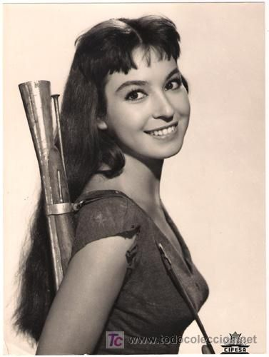
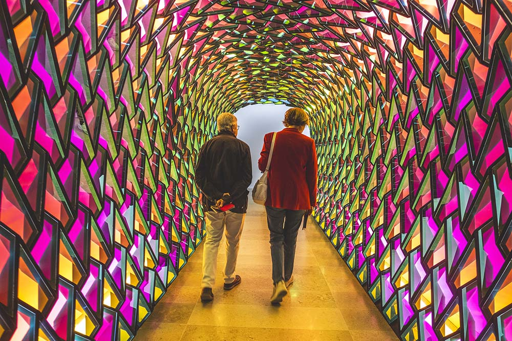

Elisa Montés era hermana de Emma Penella y Terele Pávez, y madre de Emma Ozores

La actriz Elisa Montés ha muerto a los 89 años, según ha informado la Unión de Actores y Actrices. Había nacido
en Granada en 1934 y pertenecía a una familia de artistas. Las también interprétes Emma Penella y Terele Pávez eran
hermanas suyas en la vida real, así como una cuarta, Mari Juli, que fue directora de un hotel en Las Vegas. Elisa, además,
estuvo casada con Antonio Ozores y era madre de Emma Ozores.
Hace muchos años que Elisa Montés estaba apartada de las cámaras. Sus interpretaciones iniciales se sitúan en la segunda
mitad de los 50 ('La vida en un bloc', 'La cuarta ventana'), cuando se convirtió en una de las intérpretes más prolíficas
en el cine español, trabajando a las órdenes de los directores Luis Lucia, Pedro Lazaga, José Luis Sáenz de Heredia y Mariano
Ozores.
La granadina se convirtió en una de las actrices recurrentes en las coproducciones ítalo-españolas de género western, con
títulos como '7 dólares al rojo' (Alberto Cardone, 1966), 'Texas, adiós' (Ferdinando Baldi, 1967), 'El regreso de los siete
magníficos' (Burt Kennedy, 1967), 'El proscrito del río colorado' (Maury Dexter, 1969) o 'Capitán Apache' (Alexander Singer,
1971), entre otras. Compartió protagonismo con los actores Franco Nero, Alberto Dell'Acqua, Lee Van Cleef y Yul Brynner.
Al conocer su fallecimiento, RTVE ha recordado su papel en la serie de 1971 'A través de la niebla'
Ha fallecido la actriz Elisa Montés. Nos deja grandes trabajos en Televisión Española, como esta participación en la serie de
1971 'A través de la niebla'. Nuestro recuerdo y homenaje -- >
https://rtve.es/v/5814701/ #DEP
Para leer mas información sobre esta noticia pinchar aquÏ
La prestigiosa revista ARTnews ha incluido a la valenciana en su ránking Top 200 Collectors de este año

Magnates como Jeff Bezos, CEO de Amazon; super estrellas de la música como el rapero Jay Z; empresarios de la moda como
François Hinault, fundador del Grupo Kering en el que se integran Gucci o Yves Saint Laurent; leyendas del cine como George
Lucas, creador de la saga Star Wars; su esposa y presidenta de Starbuck Corporation, Mellody Hobson... y, entre todos ellos,
Hortensia Herrero. Porque la impulsora del centro de arte que lleva su nombre en Valencia, inaugurado en noviembre de 2023,
se ha asentado como una de las grandes coleccionistas de arte mundiales.
Así lo atestigua que Herrero haya sido incluida como la única española en el ránking Top 200 Collectors de este año que
publica la prestigiosa revista ARTnews. Una lista, con dominio de fortunas estadounidenses y asiáticas, considerada por el
sector como una de las más influyentes a nivel global y en la que aparecen tanto coleccionistas a título privado como fundaciones
dedicadas a la adquisición de arte contemporáneo, clásico, impresionista o de otras etapas.
Un reconocimiento que se ha producido casi en paralelo a la puesta en marcha del Centro de Arte Hortensia Herrero, ubicado
desde hace apenas 11 meses en el Palacio de Valeriola de la céntrica calle del Mar valenciana. Este espacio de estilo gótico
cuenta 3.500 metros cuadrados de zonas de exposición en la que se recoge la colección privada de la también vicepresidenta
de Mercadona y esposa de su dueño, Juan Roig, y a la que, según datos de la propio institución, han acudido en este arranque
más de 170.000 personas.
La colección que se encuentra expuesta entre sus salas remite a pintores internacionales como el británico David Hockney,
el estadounidense Peter Halley o el fotógrafo alemán Andreas Gursky, y también a artistas nacionales como Miquel Barceló,
Blanca Muñoz o Joan Miró. Además, el Centro de Arte también cuenta con una importante presencia de los valencianos Juan Genovés,
Andreu Alfaro, Antonio Girbés, Miquel Navarro y Elena del Rivero.